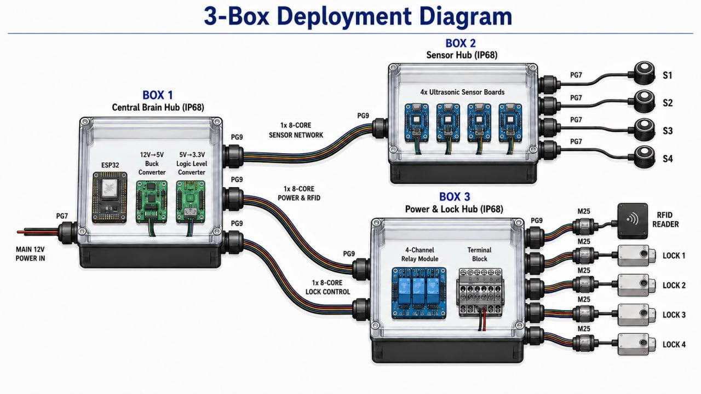
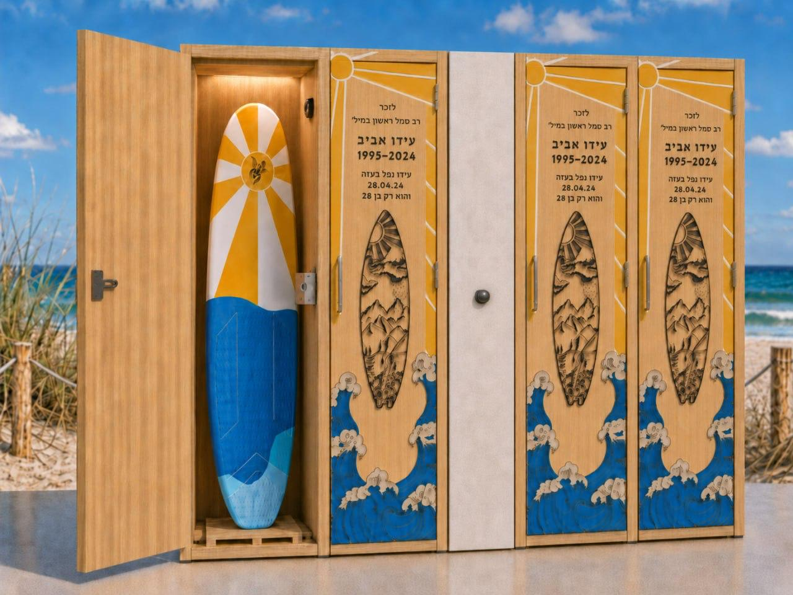
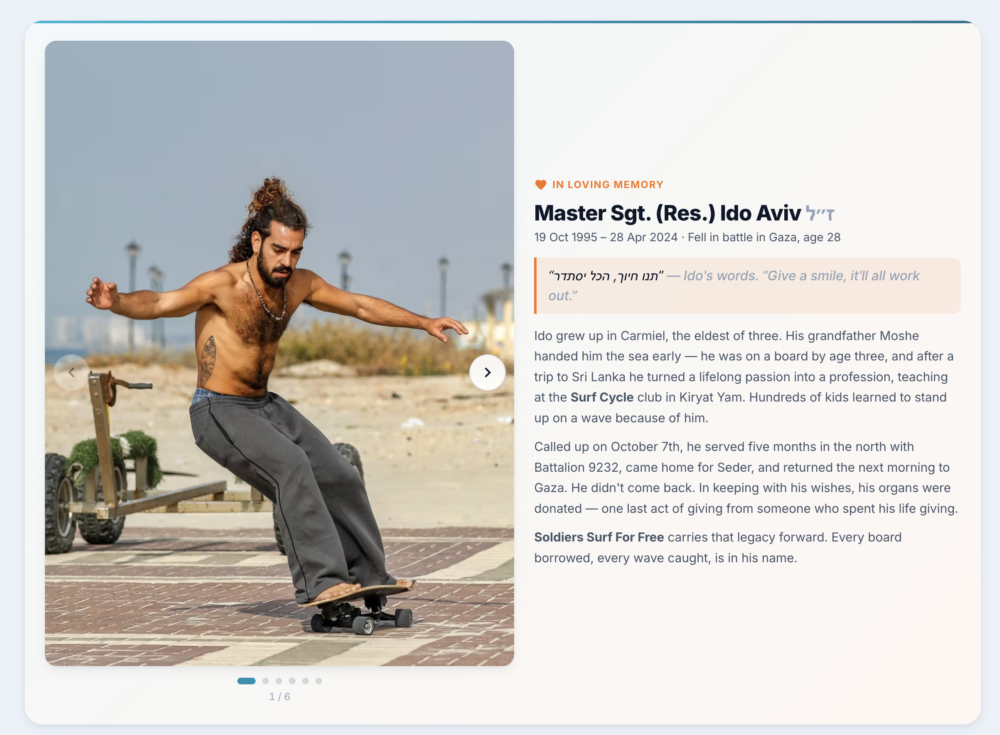
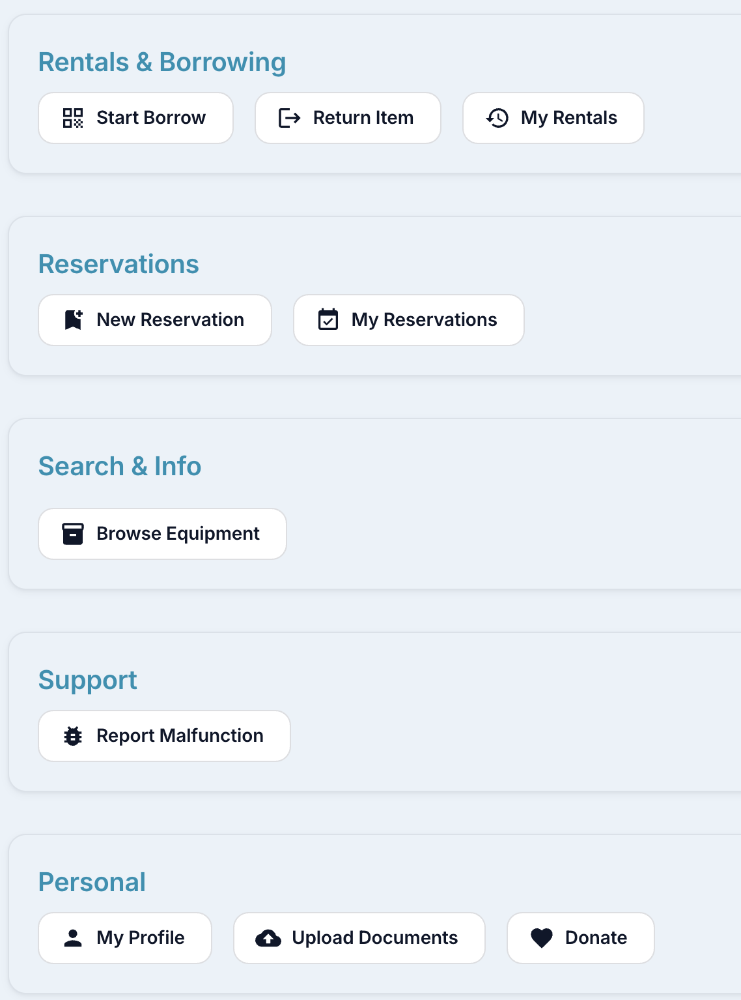
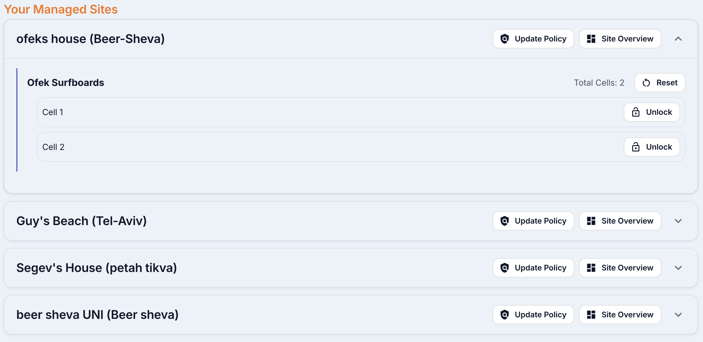
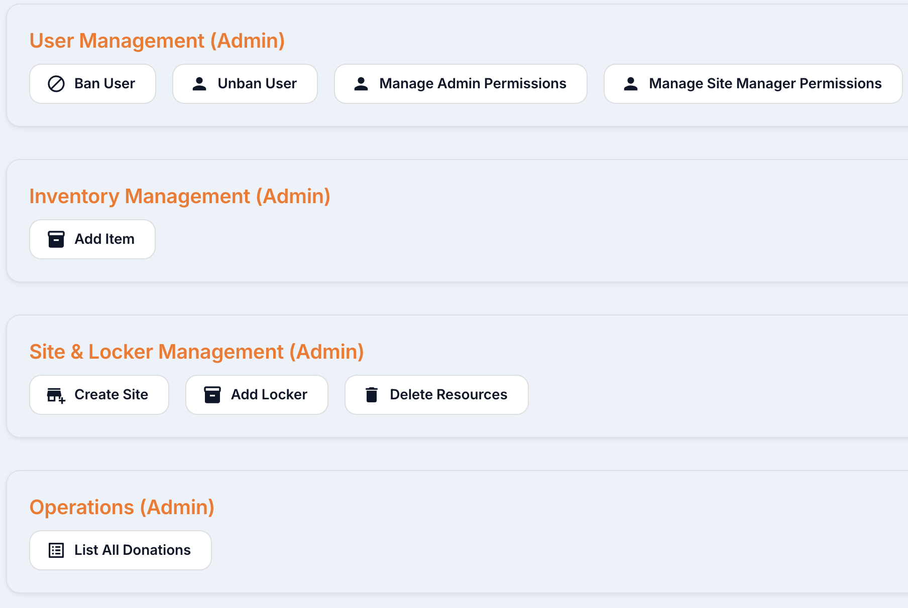

1
Background & Motivation
Ido Aviv was head of surf coaching at the Kiryat Yam surf club. He used to hand his board to any soldier who walked up — "take a surfboard, I trust you."
After Ido fell in the war, his family and his employer set out to scale that gesture: a way for any IDF soldier to borrow a surfboard at any participating beach — free, 24/7, with no staff on site.
- No staff at beaches. Boards can't be lent by hand at every site.
- Trust & verification. Real soldiers only — without holding IDs hostage.
- Multi-site, multi-locker. One platform, many cities, many policies.
- Hardware reality. Locks, sensors and weather on the coast.
3
Our Solution — an end-to-end lending platform
A soldier opens the Memorial site, signs up, and uploads their IDF card. Our OCR pipeline verifies it and stores only an encrypted hash. They pick a beach, reserve (or walk-in if allowed), and tap their card on the locker — the platform checks documents, bans, reservation and GPS in one round trip. The correct cell unlocks. They surf, return, and tap to close.
One brain, three roles: Soldier, Site Manager, Admin — each with their own dashboard. Permissions are hierarchical and every override is logged.
Roles
Soldier
Borrow, reserve, review.
Site Manager
Run one beach: cells, policy, malfunctions, remote unlock.
Admin
Provision sites, lockers, items; manage users, bans, donations.
4
How a borrow works — 6 steps, ~20 seconds
01
Sign up
Phone + IDF card upload. OCR verifies, stores a hash.
02
Reserve / Walk-in
Per-site policy: reservation only, or walk-in allowed.
03
Tap to unlock
RFID + GPS + bans + docs checked in one call.
04
Surf
Cell closes. Rental clock runs against the site cap.
05
Return
Ultrasonic sensor confirms board is back; cell locks.
06
Review
Soldier reviews the site. Managers see it in their queue.
5
Hardware — three IP68 boxes, one tap


6
The system in use — three dashboards

Meeting Ido · before every login

Soldier · borrow & reserve

Site manager · run a beach

Admin · sites, users, bans
- Requirements with the customer. ARD & ADD baked from real lending edge-cases.
- Server-enforced policy. Every borrow re-checks docs, bans, reservation, GPS.
- OCR pipeline. IDF card read once, only a hash kept.
- Field hardware. Built & tested on real Kiryat Yam cabinets.
Frontend
ReactTypeScriptTailwind
Backend
FastAPIPostgreSQLSQLAlchemyJWT
Hardware / IoT
ESP32MQTTRFIDUltrasonic
9
Conclusions & Next Steps
End-to-end works
Soldier, manager, admin flows + hardware locker — verified together on real cabinets.
Scales to many beaches
Per-site policies enforced server-side; adding a beach is a config, not a fork.
Next: scale the network
More cabinets, donation flow, Hebrew RTL polish, and an offline-tolerant lock firmware.